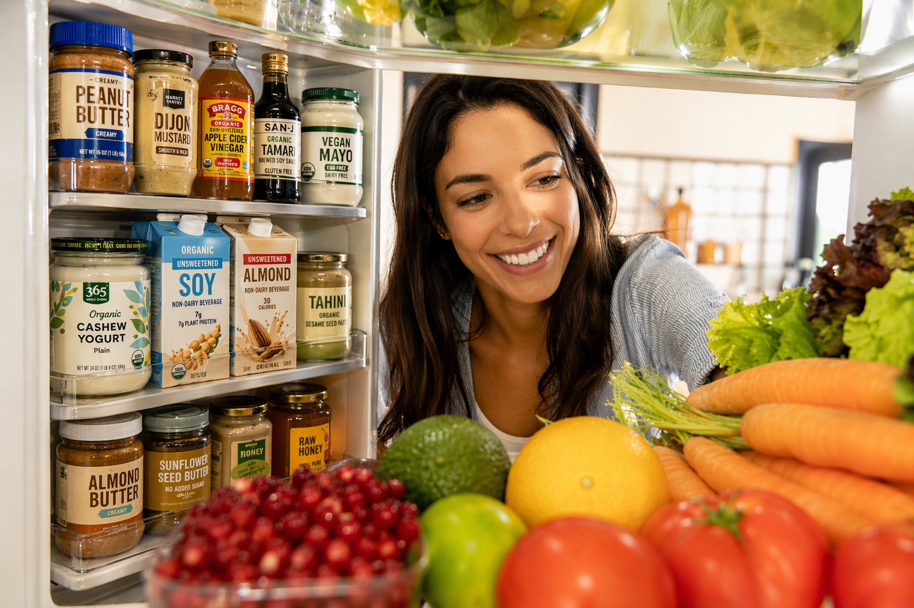

Cook with what you have

You open the fridge and think, "What can I make with this?" HARVEST knows. It matches your ingredients to plant-based recipes, filters out your allergens, and builds a shopping list for the rest.
Cook with what you have — or browse to be inspired.
Tap ★ next to any ingredient in the list below to save it here permanently — it will always be here when you return.
Tap any ingredient in the list below to add it here for today only. Won't be here next visit — tap ★ instead to save it permanently.
Tap the ingredient name → adds it for today only
Tap the ★ beside it → saves it to Always Have permanently
Type any ingredient not in the list above and press Enter or tap + Add.
Tap ★ next to any ingredient in the list below to save it here permanently — it will always be here when you return.
Tap any ingredient in the list below to add it here for today only. Won't be here next visit — tap ★ instead to save it permanently.
Tap the ingredient name → adds it for today only
Tap the ★ beside it → saves it to Always Have permanently
Type any ingredient not in the list above and press Enter or tap + Add.
No saved recipes yet.
Heart a recipe to save it here.